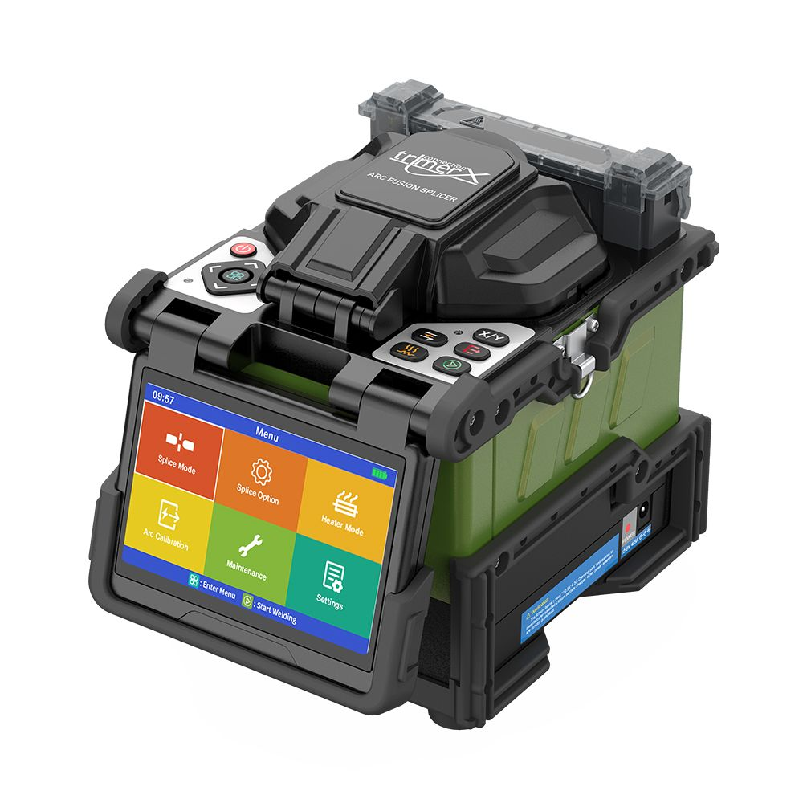
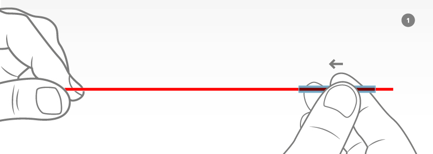
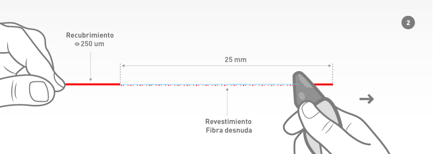
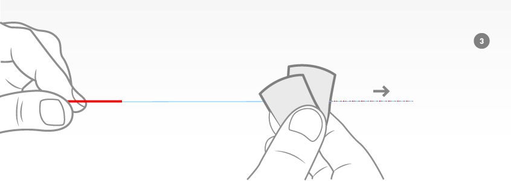
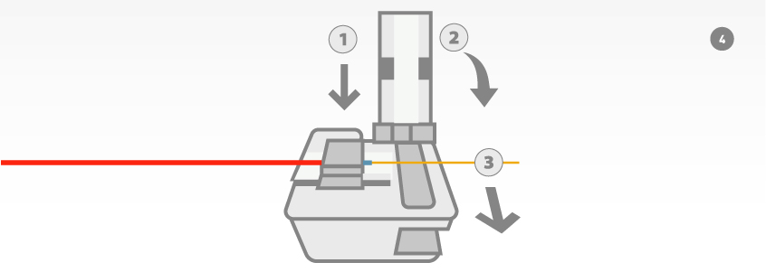
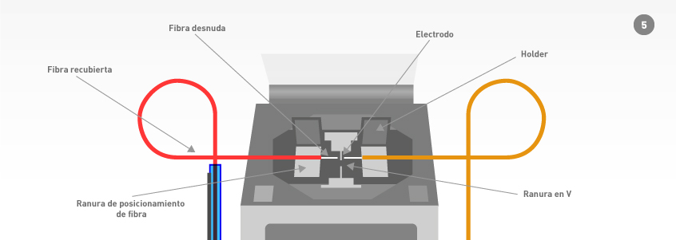
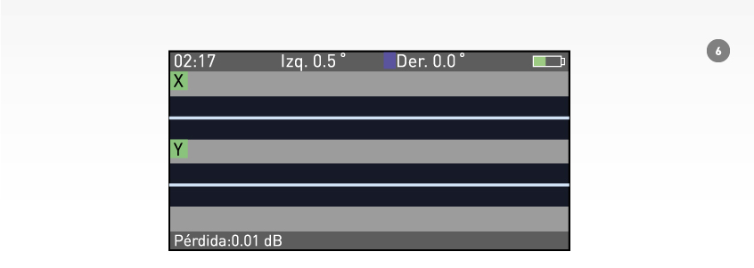
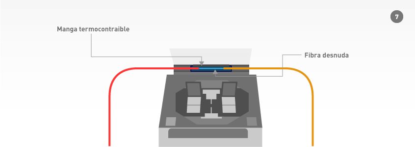
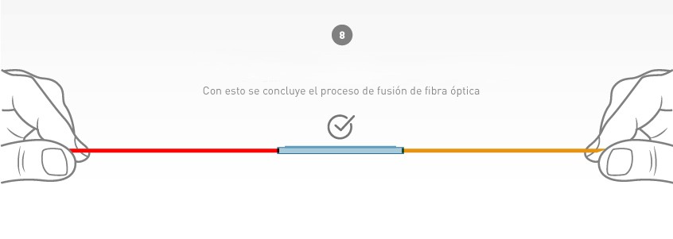

Fusión de Fibra Óptica
Kevin Mejía
HL Soluciones Tecnológicas
Objetivo
- Explicar el proceso de fusión de fibra óptica.
- Mostrar el uso del equipo FX39 paso a paso.
- Destacar buenas prácticas en el procedimiento.
Fusionadora Trimerx FX39
- 6 motores de alineación por núcleo
- Pantalla táctil de control
- Horno para protectores de empalme

Proceso de Fusión
Preparación de la fibra
- Tener en cuenta al momento de cortar el largo total, holgura en cabecera de rack de 1m aprox y en rack dejar 4m o más en caso de modificaciones futuras.
- Se coloca el termocontraible en algún extremo de las puntas a fusionar.

Retiro de protecciónes
- Se retiran todas las cubiertas del cable, hasta llegar al revestimiento o Cladding, a lo largo de aproximadamente 25mm. Todo esto utilizando la herramienta destinada para ese fín.

limpieza
- Se realiza la limpieza con la ayuda de alcohol isopropílico y toalla libre de pelusa.

Corte
- Se realiza el proceso de corte, con la cortadora de precisión, a una longitud de 15mm.

Colocación en fusionadora
- Se coloca la fibra, previamente cortada, en la zona de fusión, dejando la fibra sobre la ranura en V, evitando que la punta sobrepase la altura de los electrodos, y teniendo particular cuidado en no golpear o ensuciar la fibra.

Fusión
- Se realiza el empalme, simplemente cerrando la tapa la máquina realizar el proceso de fusión de manera automática. Una vez finalizada la fusión, la máquina evalúa las pérdidas del empalme y muestra una estimación que NO debe superar 0.03dB.

Termocontraible
- Una vez finalizada la fusión, se libera el empalme de los holders y se alinea con el termocontraible, cubriendo la fibra que se encuentra desnuda, posteriormente se coloca en el horno de la máquina, de manera centrada para garantizar que la manga de empalme se contraiga uniformemente.

Paso final
- Al término del tiempo en el horno, sonará un "bip" indicando que está listo, se coloca el termocontraible en la bandeja de enfriamiento. Una vez esté sólido el termocontraible se da por terminado el proceso.

Buenas Prácticas
- Mantener el orden en el area de trabajo.
- Mantener cuchillas y herramientas en óptimo estado.
- Depositar los reciduos de fibra desnuda en el contenedor destinado para dicho fin.
- Siempre dejar las fusiones ordenadas en la bandeja de empalmes respetando orden de colores.
Conclusión
Seguir de manera rigurosa cada paso del proceso de fusión, junto con la aplicación de las buenas prácticas, garantiza resultados óptimos y confiables.
HL Soluciones Tecnológicas